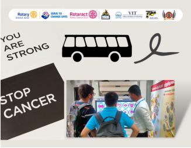
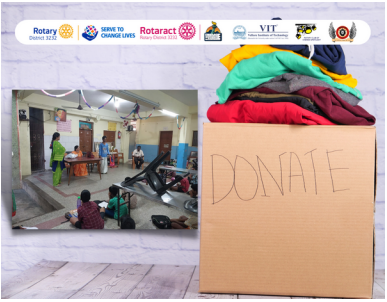

BUS OF HOPE CANCER AWARENESS
Cancer is a disease in which some of the body's cells grow uncontrollably and spread to other parts of the body. Cancer can start almost anywhere in the human body, which is made up of trillions of cells. Normally, human cells grow and multiply to form new cells as the body needs them. When this orderly process breaks down, and abnormal or damaged cells grow and multiply when they should not, the formation of tumours may take place. Tumours can be canerous.
An estimated two-thirds of all cancers are preventable and yet two-thirds of all cancer patients are not cured. This is a major cause for concern.
Bus of Hope is an event that was conducted in order to raise awareness about this disease.

PAROPKAR ORPHANAGE VISIT
An orphanage houses children of various ages who either have no family or have lost their families in natural calamities. The Rotaract Club of of VIT Chennai took immense pleasure in visiting Anbagam which is located near our campus. This orphanage visit helped our club members to interact with the children present there and we donated beds, buckets and mugs to them.
This orphanage visit is a life- changing experience for all our members it is filled with as emotions and sentiments.
"We can't help everyone, but everyone can help someone..."
